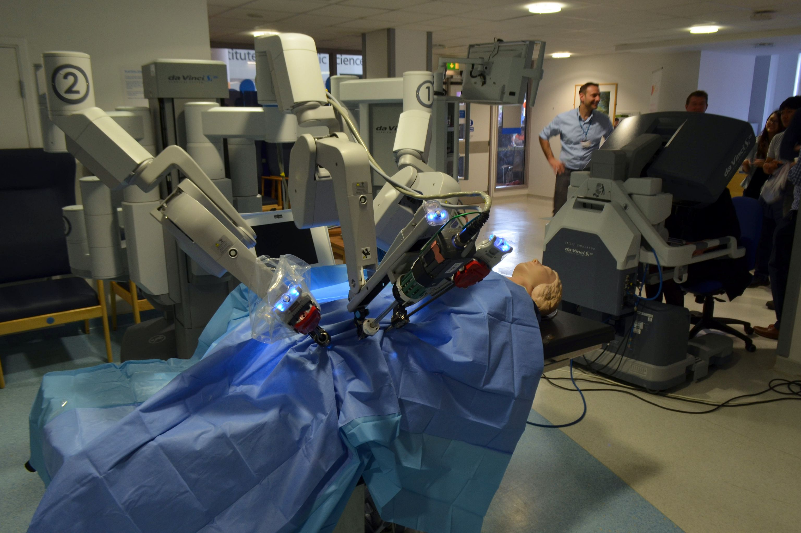

Case Study 2
Da Vinci Surgical System
The Da Vinci Surgical System is a surgical machine that is remotely controlled by a surgeon from a console.
The surgeon's fingers are place in the console for real time manipulation of the robotic arms that perform the surgery. The console also provides magnified, 3D high-definition views of the surgical operation area.
This allows surgeons to operate with precision, without the risk of contamination of the patient and a much wider range of motion and ability.